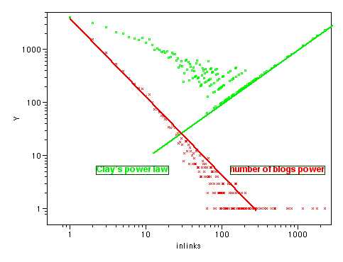

Clay Shirky's Power Laws, Weblogs, and Inequality set off a lot of discussion on Power laws and weblogs. Clay's paper is correct as far as it goes, but it makes a couple of classic mistakes. Despite saying that the numbers represent a continuum, Clay focuses mainly on the top few, and then classifies the different blogs into 3 classes, propagating the same 'hubs' or 'connectors' myth that bedevils discussions of power laws post 'Tipping Point'. Clay plots everything in linear space, making it very hard to see the accuracy of the power laws claimed.
The easiest way to see a power law is to plot the data in log/log space. If there is a power law relationship, you get a straight line. Here's the Technorati top 100 plotted in this way:
| R2 | 0.93801 |
Clay suggests we compare this with the top 100 newspapers by sales:
| R2 | 0.984953 |
There is a superficial similarity, but note the trend at the right hand side in each case - the blogs trend above the line, the newspapers below. Lets look at Movie box office gross by rank (data from the-numbers.com)
| R2 | 0.813102 |
Here we can clearly see a saturation effect - the power law breaks down after a while, as there are feedback mechanisms in place for movies (they won't show a second week if they gross poorly in the first). Also, the cost of entry to movie making is rather high. Lets stop and think about this a little though. There were many more movies made between 1991 and 2002 than are shown in this data, because most of them didn't get a cinematic release- all those student films, wedding videos and family vacations that were made don't show up in these figures. There is a sampling bias here, as there is in the other figures too.
Lets look at the original data Clay cited - the Blogging Ecosystem, as this provides more detailed data than just the top 100. I took a dump of the python data there, and ran a script over it to give me the number of blogs with each number of links, then assigned a rank. If we plot this, we see a similar effect.
However, there is obviously sample bias at work here too - Ev claims over a million blogs on Blogger, with 200,000 active, so the total of a few thousand here is obviously missing most blogs, and most likely missing those at the lower end. However, we still get about 4000 blogs with one incoming link each. Let's plot the total number of incoming links by rank - multiply the incoming links by the number of blogs listed with that many incoming links:
Suddenly, the picture is not so clear - we have a great many links in these 'low ranked' blogs. In fact we have more there than in the high-ranked ones. And that's just with 10,000 or so blogs, not the full million. Lets look at this another way. I binned the data in powers of 2, (blogs with 1,2,4,8,16 etc links) and plotted that:
This is the other way round - the 'low ranked' blogs by links are at the left, the high-ranked ones at the right. See how many more links the low-ranked ones account for (remember, this sample is missing over 90% of low ranked blogs).
Another way of looking at this, showing all the data points:
The green line sloping from top right to bottom left is Clay's power law, the red line from top left to bottom right is the number of blogs with that many incoming links. They roughly balance out the total number of links.
So what conclusions can we draw from all these graphs?
Kevin Marks, February 17th 2003